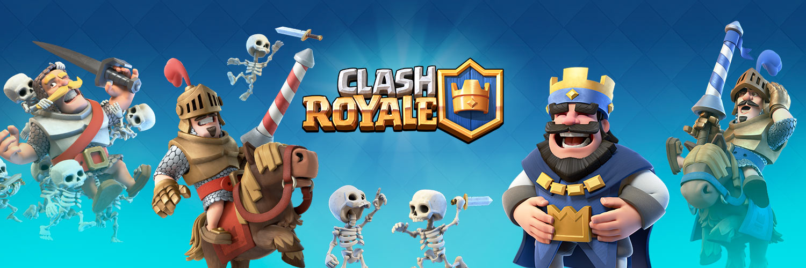
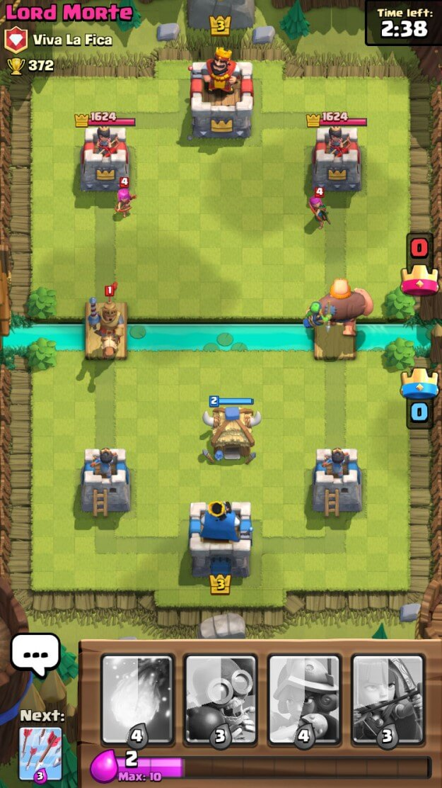

Strategia / Tower Defense / Card Game


Clash Royale è un gioco rapido che consente di mantenere un livello di attenzione alto grazie alle numerose azioni che richiede per essere giocato. Il gameplay garantisce un 1v1 tra due mazzi gestiti da due player che, come obiettivo, hanno quello di abbattere le torri avversarie difendendo le proprie.
Il match making è basato sul livello del player che deve cercare di salire di coppe per poter sbloccare ricompense, carte, nuove truppe e anche modalità diverse. L'unica pecca è che per qualche strano motivo se il gioco decide che te non devi più vincere, tu non vinci. Nonostante le tue skills con il tuo mazzo, il gioco riuscirà sempre a metterti contro qualcuno o con un livello superiore al tuo o con un mazzo che countera totalmente il tuo. A volte accadono la combinazione delle cose che rende praticamente impossibile vincere.
Il sistema di unlock delle truppe è bilanciato e strutturato in base alle arene. Le arene sono scalabili facendo coppe che ovviamente si fanno vincendo.
Una feature molto interessante del gioco è quella del clan. Il clan è composto da un massimo di 50 player che collaborano per competere nella "guerra tra clan" che consiste in 4 settimane di battaglie. Le prime tre sono "sfide sul fiume" composte da 3 giorni di allenamento e 4 di sfida. Ogni vittoria nelle sfide farà guadagnare delle medagliette al clan, con un massimo di 900 medagliette al giorno. Alla quarta settimana la "sfida grandiosa" garantisce ricompense maggiori.
Un'altra pecca del gioco è che per la ladder, ovvero la classifica di coppe base, il gioco si presenta come molto "pay to win" dato che a livelli bassi, chi usa la carta di credito può potenziare e sbloccare carte facilmente, sfruttando gli svantaggi dello "script" del gioco.